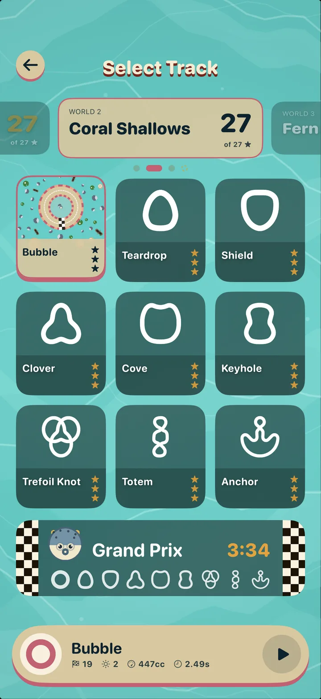

The short answer
Animal Loop uses Game Center. Invite your friends from the Friends screen, or add them in Game Center, and their best runs race next to you on every track as translucent ghosts. The Friends screen ranks everyone's Grand Prix times, with the gap to your best, so you always know who to beat next.
How to race your friends
Sign in to Game Center
Animal Loop uses Apple's Game Center for friends, so make sure you're signed in to Game Center on your iPhone, iPad or Mac.

Invite a friend
Open the Friends screen in Animal Loop and tap the plus button or Invite a friend, or add them as a friend in Game Center. Once they play, their Grand Prix times appear on your Friends screen.

Race their ghosts
On every track, your friends' best runs race next to you as translucent ghosts. You can see where they were at this exact moment of their best lap, so you know right away if you're ahead or falling behind.

Beat their Grand Prix times
The Friends screen shows everyone's Grand Prix times in all three worlds, as the gap to your best. Your own best total is on each world's Grand Prix card. Find the smallest gap, and go take it.

Frequently asked questions
Do my friends need Animal Loop too?
Yes. Your friends need Animal Loop and a Game Center account. Animal Loop is free on iPhone, iPad and Mac, so it's easy to invite anyone.
What are ghosts in Animal Loop?
Ghosts are translucent copies of your Game Center friends' best runs. They race next to you on the track, so every race is a race against your friends' best times, even when they're not playing.
Where can I see my friends' times?
On the Friends screen. It lists your Grand Prix times and your friends' in every world, with the gap between each friend and your best.
Is Animal Loop free to play with friends?
Yes. Animal Loop is free, everything in the game can be unlocked by playing, and racing friends through Game Center doesn't cost anything.
More questions
Ready to race?
Animal Loop is free on iPhone, iPad and Mac, and everything in the game can be unlocked by playing.
Get Animal Loop free on the App Store See the game